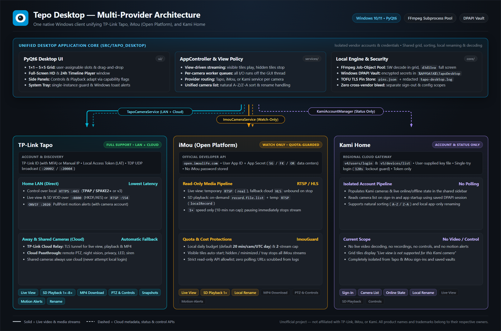

Tepo Desktop
An unofficial Windows app that shows your security cameras in one window: a grid from 1×1 up to 5×5, a full-screen view, and a player for recordings.
Unofficial. Tepo Desktop is an independent project. It is not made, approved or supported by TP-Link, Kami or iMou. Tapo, TP-Link, Kami and iMou are trademarks of their owners. They are named here only to say which cameras and accounts the app can work with.
What works with which account

| Account | What you get | Guide |
|---|---|---|
| TP-Link Tapo (LAN & Cloud) | Full support: live view at home and away/shared, PTZ and device controls, 24h memory-card recordings (1x–8x playback and MP4 download), snapshots, motion notifications, and renaming. |
Tapo sign-in |
| iMou (Open Platform) | Watch only: live view (RTSP / HLS) and 1x memory-card playback with local daily minute budget & concurrent stream cap; local rename only. No downloads and no camera controls. |
iMou sign-in |
| Kami Home | Account sign-in, the camera list, the online state, sorting, and local rename only. Live view, recordings, and controls are not supported. | Kami sign-in |
How it works across providers

- TP-Link Tapo: Auto-discovers cameras on your home network (
TDPUDP20002/20004), controls them over localHTTPS :443(TPAP / SPAKE2+or Secure v3, using Local Access Tokens when required), and streams live view and recordings over:8800(HKDF/AES) orRTSP :554withONVIF :2020motion events. Away and shared cameras route automatically through the TP-Link Cloud Relay and Cloud Passthrough. - iMou (Open Platform): Connects to
open.imoulife.com(sg,fk, oror) using your own free developer App ID and App Secret without storing your iMou password. Watch-only live view (temporaryRTSPor fallbackHLS, unbound on stop) and on-demand1xmemory-card playback (record.file.list, 10-minute run cap; pause stops the stream) are guarded by a local daily minute budget (default 20 min/camera/UTC day), a 2-stream cap, auto-stop when hidden or minimized, and a strict read-only API allowlist. - Kami Home: Signs in through Kami’s regional gateway (
v4/users/login,v5/devices/list) using a user-supplied key file, single-attempt login (120-second lockout guard), and DPAPI-saved session token to populate your camera list and online state with local app-only renaming.
Install
You need Windows 10 or 11 (64-bit). Get one of these files from the Releases page of the project’s GitHub repository:
TepoDesktop-0.1.0-setup.exe: an installer. It installs for your Windows user only and needs no administrator rights. It can add a desktop shortcut and can start the app when you sign in to Windows.TepoDesktop-0.1.0-win64.zip: unzip it anywhere and runTepoDesktop\TepoDesktop.exe. No install step.
The video decoder (FFmpeg) is included. The build is not code-signed, so Windows SmartScreen may show a warning the first time you run it.
Web filters and ad blockers. Filters such as AdGuard can intercept plain HTTP traffic from programs on your PC, even traffic to your own cameras. This can break live view and downloads from Tapo cameras on your network. In your filter’s settings, exclude TepoDesktop.exe and ffmpeg.exe. An exclusion made for an older program name does not carry over to a new name.
First start
- Start the app. It asks you to sign in with your TP-Link ID. Choose Use without account if you only want to add cameras by IP address, or if you use Kami or iMou only.
- Your Tapo cameras appear with the names you gave them in the Tapo app. Visible cameras on your home network stream directly over LAN, while away and shared Tapo cameras stream through the TP-Link cloud relay.
- For Kami or iMou, open the account button in the top bar and follow the matching guide.
- Read Using the app for the grid, full screen, recordings, renaming, the tray icon and notifications.
Your data
Passwords and keys are stored with Windows data protection, so only your Windows user can read them. Settings and logs are in %APPDATA%\TapoDesktop. The folder keeps this name so that settings and sign-ins carry over from earlier versions. See the data folder.
What it does not do
- Two-way talk and audio in live view are not built.
- Kami live video and Kami recordings are not supported.
- iMou downloads, faster playback speeds and camera controls are not supported.